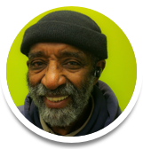
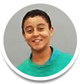

OVERVIEW
The Planet Earth is the biggest experiment ever known...at least by Earthling scientists, that is! What are the farthest reaches of the Universe, and could we travel there someday? How deep is the deepest place on the Ocean floor...and what exactly lives down there? What are we made of and how do our bodies work inside of a larger living system? These are questions that every child should have the opportunity to explore--at school, at home...and at work as a citizen scientist.
Planet Lab is a fun and social learning network that helps the next generation of young scientists learn about Earth’s air, water, energy, food systems and medicines…and the mysteries that lie beyond the horizon line.
The Problem is that kids are loosing important opportunities to play and learn in the world of science.
Few U.S students are capable in science at their grade level (only 32% in 4th grade, only 20% in 12th). This is partly a problem of teacher preparation: 61% of elementary educators feel poorly unprepared to teach science; only 31% of 8th grade math teachers majored in math.
Right now, the average American kid spends over 6 hours a day watching screen media and only 30 minutes a day playing outside. With media up and creative play down, our kids are quickly becoming less active, more obese, and more likely to struggle with attention disorders—all problems that we can impact with foundational education in health and creative innovation. But right now, only 2.6 school hours per week in schools are spent on science...that's just 30 minutes per day!
Inquiry-based Learning, environmental education and hands-on tinkering are great ways to engage kids in learning science. In fact, schools with environmental education programs score higher on math, reading, writing and listening tests.
To build the next generation of creative problem solvers, we quickly need to expand effective natural science programs and support teachers to integrate project-based science and technology learning with reading, writing and mathematics. We need to find ways to integrate learning across home, school, and afterschool contexts. We need to encourage kids to research and act on everyday questions that they care about.
As we build a global Planet Lab for kids, we imagine a world where every young person has access to high-quality, engaging STEM learning opportunities. We aim to quickly increase and disseminate learning materials needed for fun and relevant science engagement.
FEATURES
With Planet Lab, young users take on new meaningful new roles through apprenticeship and hands-on learning. They become hydrology researchers, inventors, beekeepers, and astronomers. (Note: Wireframes are works in progress.)
We asked over 500 youth in summer learning programs: "What STEM topics are important for you and your community?" and "Where do you see opportunities for science around you?" In hands-on UX design workshops, youth created ideas for connecting to STEM to their hopes and concerns.
Working with a team at CNT's Sustainability Hackathon, we pinpointed the problem that STEM curricula are "siloed" and hard to access. We prototyped a crowd-source encyclopedia that can make these resources available quickly to schools and families.
Hands-on lessons engage multiple learning styles and make math and reading relevant. Balloon mapping is an inexpensive technique that teaches geometry, physics, and community development skills.

Hands-on lessons engage multiple learning styles and make math and reading relevant. Site maps made by kids can teach the fundamentals of architecture and planning.
Teachers and young advisors told us they want networked, team-based learning...less review sheets and teacher talk. This early design of a Lab Notebook allows teachers and kids to share multi-media research notes.
Interactive maps let users geo-tag sites of interest. Whether its the local chicken coop or a Planetarium Fieldtrip, adventure maps will let mobile users access content user observations. (Wireframes in progress.)
Science Assemblies allow organizations and schools to create multi-sited experiments that classrooms add observations to, from "Great Lakes Water Quality" to "Asthma and Air." By sharing a set of data collection standards, students and teachers can collaborate on real research.
Standards-based education means that science-time must reinforce literacy and math basics. A fun multi-media player sets up learners for engaging with content and transcripts. Vocabulary, reading and review questions reinforce basic skills.
PARTNERS
Our design council has leaders from an expanding network of STEM teaching organizations. Advisors provide expert design advice and share STEM curricula and related media that they have created.
Active Transportation Alliance
The mission of Active Transportation Alliance is to make bicycling, walking and public transit so safe, convenient and fun that we will achieve a significant shift from environmentally harmful, sedentary travel to clean, active travel.
Greencorps Chicago
Greencorps’ mission is to promote environmental stewardship and improve the quality of life in Chicago by establishing, maintaining and restoring natural and public spaces that are safe, healthy and sustainable through hands-on involvement with trainees.
Peggy Notebaert Museum
The museum's mission is to create a positive relationship between people and nature through collaborations, education, research and collections, exhibitions, and public forums to grow our region’s urban connection to the world of nature and science.
Academy for Global Citizenship
AGC develops mindful leaders who take action both now and in the future to positively impact their communities and the world beyond. Our innovative and holistic approach to education aims to foster systemic change and inspire the way society educates our future generations.
Chicago STEM Pathways Collaborative
The Chicago STEM Cooperative is a community-based effort to survey out-of-school-time programs and consider the way educational institutions, businesses and city services could cooperate to build and support pathways into science, technology, engineering and mathematics for Chicago’s young people.
Forest Preserve District of Cook County
The Forest Preserve District of Cook County, with more than 68,000-acres, is the largest forest preserve district in the United States. It receives an estimated 40 million visits each year, providing an escape into a world teeming with wildlife and rich with outdoor recreation and environmental education opportunities.
Garfield Park Community Council
The GPCC is dedicated to the revitalization of the Garfield Park community: a neighborhood of rich history, committed residents, and tremendous opportunities on Chicago’s West Side. The GPCC’s work centers on four priority areas identified by residents: Housing, Business Development, Wellness, and Public Safety.
West Town Bikes
West Town Bikes is a community bicycle learning workshop. WTB offers bicycle mechanics workshops, youth programs and special events to members of the community.
Two Bridges Neighborhood Council
Two Bridges serves the residential, commercial, and cultural life of Manhattan’s Lower East Side through community-based programs and strategic partnerships.
NEXT STEPS
Planet Lab can help kids use science to make an impact on the world. We will work to foster a new generation of young scientists as we:
Enrich classrooms, homes and after-school programs with learning resources on a myriad of STEM topics.
Engage youth learners in networked research and innovation collaboration.
Spread ideas and innovations between members of a citizen scientist community that is dedicated to helping our Earth laboratory’s precious habitats.
Get in touch with us if you are part of a team or organization that would like to share learning activities with schools. If you are interested in keeping track of our design work as it progresses, check out these resources:
Git Hub Link
User Stories Document
Our Planet Lab team is currently seeking experienced javascript programmers and curriculum development specialists. Please connect at info@freedomgames.org if you are interested in becoming a part of this dynamic project.
TEAM
Ala' Diab
UX Designer

Richard Dobbins
Community Engagement
Wil How
Technical Lead

Cherokee Sperry
Youth Designer
Theresa Strepek
Front-End Developer
Eve Tulbert
Project Lead/UX Design
Jeremy Washington
Front-End Developer
Freedom Games is a design collaborative dedicated to excellence in teaching and learning. We partner with young artisans and teacher-leaders to create toys, games, and family media products that help communities learn together.